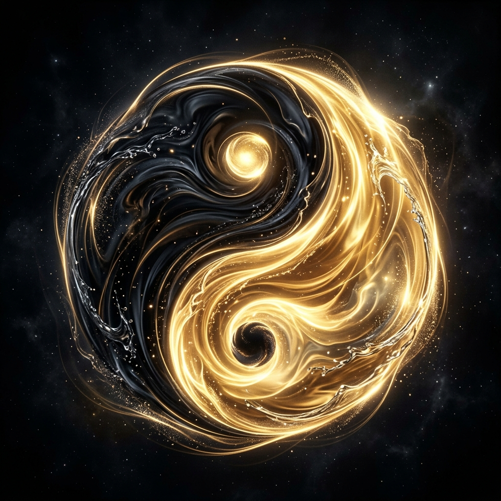

Reiki

El Arte de
Sanar sin Tocar
The Art of
Healing without Touch
Canalizamos la energía universal para restaurar el equilibrio físico, mental y emocional. Una técnica de amor y presencia pura. We channel universal energy to restore physical, mental, and emotional balance. A technique of pure love and presence.
Formación en 3 Niveles
3 Levels of Training